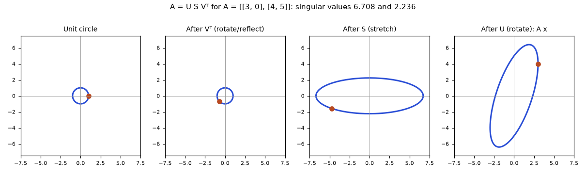
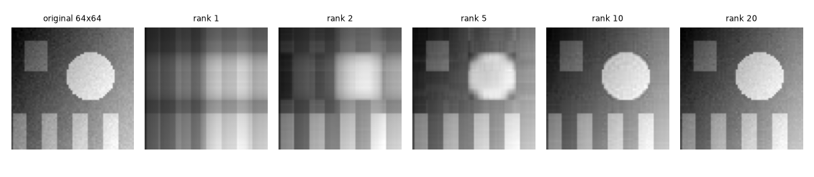
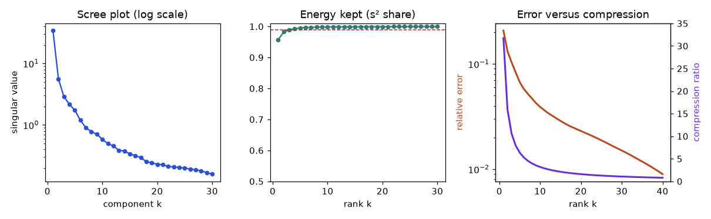
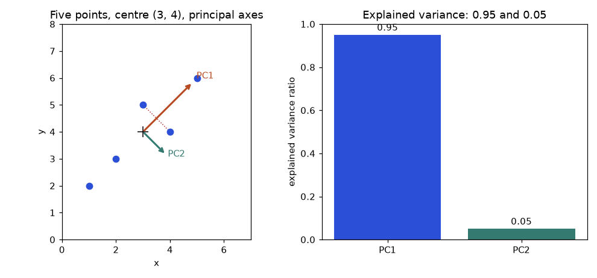
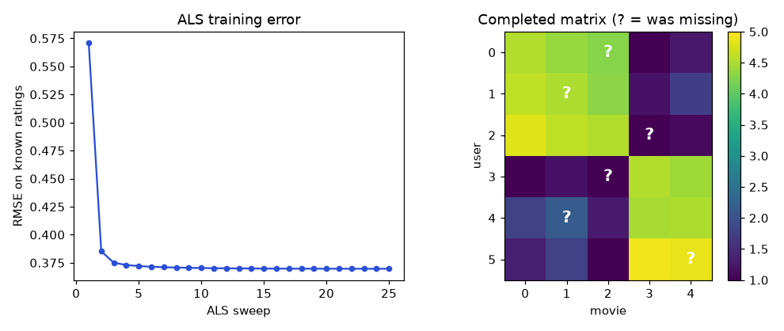

A streaming service has 2 million users and 50,000 films. Its ratings table has 100 billion cells, and fewer than 1 percent of them are filled in. Somebody asks: "Which film should we show Ana tonight?" Nobody has rated most films, so you cannot just look the answer up. Yet the service answers this question millions of times a day, and the answer is good. The trick is a piece of linear algebra: you assume the giant table is secretly built from a handful of simple patterns ("likes action", "likes romance", "likes old films"), you find those patterns from the cells you do know, and you use them to fill the cells you do not.
The same idea compresses a photo to a fifth of its size, finds the two or three directions that matter in a spreadsheet with 200 columns, makes a least-squares fit safe when columns are nearly copies of each other, and explains why a language model can be fine-tuned by training a tiny fraction of its weights. All of it is one tool: the singular value decomposition, or SVD. It is the most useful single idea in applied linear algebra, and this chapter builds it from the ground up.
After this chapter you will be able to: compute an SVD of a 2×2 matrix by hand; read singular values as stretch factors and as a measure of rank; build the best low-rank approximation and know exactly how much error it makes; derive PCA two ways and compute a 5-point example by hand; code PCA from scratch and match scikit-learn; build a small recommender with alternating least squares; use QR and Cholesky to solve problems faster and more safely; and explain norms, condition numbers and LoRA in an interview. You need Chapters 5 to 8 (vectors, matrices, linear systems, eigenvalues); we will remind you of each fact we use.
Recall from Chapter 6 that a matrix A moves points around: it turns the unit circle into a tilted ellipse. The SVD says that every matrix, square or not, does this in three plain steps:
U and V are orthogonal matrices: their columns have length 1 and are at right angles to each other, so UᵀU = I and VᵀV = I. They preserve lengths and angles. All the "action" that changes sizes is in S, whose diagonal entries σ1 ≥ σ2 ≥ … ≥ 0 are the singular values. The columns of V are the right singular vectors (the special input directions) and the columns of U are the left singular vectors (the matching output directions).

How to read it: the first panel is the unit circle. The second panel is the same circle after Vᵀ: a circle again (rotations do not change shape), but the dot has moved. The third panel stretches the horizontal direction by 6.708 and the vertical direction by 2.236. These two numbers are the singular values. The fourth panel rotates the ellipse into its final tilted position, which is exactly the picture of A acting on the circle. The long axis of the final ellipse has length σ1 and the short axis σ2.
When A is tall (say 5×3, five samples and three features), the last two columns of the 5×5 matrix U only multiply rows of zeros in S, so they never matter. Dropping them gives the thin (or "economy") SVD. This is what you use in practice.
| Version | U | S | Vᵀ | Use |
|---|---|---|---|---|
| Full | m × m | m × n | n × n | Theory, null-space bases |
| Thin (m ≥ n) | m × n | n × n | n × n | Default in code, PCA, least squares |
| Truncated (rank k) | m × k | k × k | k × n | Compression, denoising, recommenders |
Problem 9.1.1 Code: the SVD of A = [[3, 0], [4, 5]]. NumPy returns U, the singular values as a plain vector s (not a matrix), and Vᵀ already transposed.
import numpy as np
A = np.array([[3.0, 0.0], [4.0, 5.0]])
U, s, Vt = np.linalg.svd(A)
print("U =\n", np.round(U, 4))
print("s =", np.round(s, 4))
print("Vt =\n", np.round(Vt, 4))
print("rebuilt =\n", np.round(U @ np.diag(s) @ Vt, 4))
print("sqrt(45), sqrt(5) =", np.round(np.sqrt([45, 5]), 4))U =
[[-0.3162 -0.9487]
[-0.9487 0.3162]]
s = [6.7082 2.2361]
Vt =
[[-0.7071 -0.7071]
[-0.7071 0.7071]]
rebuilt =
[[3. 0.]
[4. 5.]]
sqrt(45), sqrt(5) = [6.7082 2.2361]Signs of whole columns can be flipped in pairs (ui and vi together) without changing the product, so your computer may show different signs than your hand calculation. Both are correct.
U, s, V = np.linalg.svd(A); A_rebuilt = U @ np.diag(s) @ V. The third output is already Vᵀ, and s is a vector. Right: U @ np.diag(s) @ Vt, and use Vt.T when you want V. Check by rebuilding A with np.allclose.Problem 9.1.2 Shapes. A matrix has 5 rows and 3 columns. State the shapes of the full and thin SVD factors.
import numpy as np
rng = np.random.default_rng(0)
A = rng.integers(-3, 4, size=(5, 3)).astype(float)
U, s, Vt = np.linalg.svd(A) # full
print("full:", U.shape, s.shape, Vt.shape)
U2, s2, Vt2 = np.linalg.svd(A, full_matrices=False) # thin
print("thin:", U2.shape, s2.shape, Vt2.shape)
print("same singular values:", np.allclose(s, s2))
print("thin rebuild ok:", np.allclose(U2 @ np.diag(s2) @ Vt2, A))
S_full = np.zeros((5, 3)); S_full[:3, :3] = np.diag(s)
print("full rebuild ok:", np.allclose(U @ S_full @ Vt, A))full: (5, 5) (3,) (3, 3)
thin: (5, 3) (3,) (3, 3)
same singular values: True
thin rebuild ok: True
full rebuild ok: TrueFull: U is 5×5, S is 5×3, Vᵀ is 3×3. Thin: U is 5×3, S is 3×3, Vᵀ is 3×3. NumPy returns the singular values as a vector of length min(m, n) = 3 in both cases, which is why the code builds the 5×3 matrix S by hand for the full version.
You already know how to find eigenvalues (Chapter 8). The SVD hides inside them. Start from A = U S Vᵀ and form AᵀA. Use the rule (XY)ᵀ = YᵀXᵀ and UᵀU = I:
The right-hand side is an eigendecomposition: V holds orthonormal eigenvectors, and SᵀS is diagonal with entries σi2. So the right singular vectors of A are the eigenvectors of AᵀA, and the eigenvalues of AᵀA are σi2. The same steps for A Aᵀ give A Aᵀ = U (S Sᵀ) Uᵀ, so the left singular vectors are eigenvectors of A Aᵀ with the same nonzero eigenvalues σi2. This gives a recipe:
Step 3 follows from A vi = σi ui. Why must ui be a unit vector? Its length is ‖A vi‖/σi, and ‖A vi‖2 = viᵀ AᵀA vi = λi = σi2, so the length is 1. The ui are also at right angles: ui·uj = (A vi)ᵀ(A vj)/(σiσj) = viᵀ(λj vj)/(σiσj) = 0 for i ≠ j.
Problem 9.1.3 A 2×3 matrix has a 3×3 matrix AᵀA and a 2×2 matrix A Aᵀ. Do their eigenvalues agree?
import numpy as np
A = np.array([[3.0, 2.0, 2.0], [2.0, 3.0, -2.0]])
s = np.linalg.svd(A, compute_uv=False)
ev_ata = np.linalg.eigvalsh(A.T @ A)[::-1] # 3 eigenvalues, largest first
ev_aat = np.linalg.eigvalsh(A @ A.T)[::-1] # 2 eigenvalues
print("singular values :", np.round(s, 4))
print("eig of A^T A (3x3) :", np.round(ev_ata, 4))
print("eig of A A^T (2x2) :", np.round(ev_aat, 4))
print("sqrt of eig of AAt :", np.round(np.sqrt(ev_aat), 4))singular values : [5. 3.]
eig of A^T A (3x3) : [25. 9. 0.]
eig of A A^T (2x2) : [25. 9.]
sqrt of eig of AAt : [5. 3.]The 2×2 matrix A Aᵀ has eigenvalues 25 and 9. The 3×3 matrix AᵀA has the same two plus one extra 0, because A has only two rows and therefore rank at most 2. The singular values are 5 and 3. We will redo this matrix by hand in Section 9.3.
np.linalg.svd to compute.The SVD can be written as a sum of rank-one layers:
Each term uiviᵀ is an m×n matrix of rank 1 (an outer product from Chapter 6): one column pattern times one row pattern. The singular value says how much that layer contributes. This "sum of layers, biggest first" picture is the key to everything in Sections 9.4 to 9.7. Check the geometric claim numerically:
import numpy as np
A = np.array([[3.0, 0.0], [4.0, 5.0]])
U, s, Vt = np.linalg.svd(A)
V = Vt.T
for i in range(2):
print(f"A v{i+1} = {np.round(A @ V[:, i], 4)} and s{i+1} u{i+1} = {np.round(s[i] * U[:, i], 4)}")
# longest and shortest stretch over many unit vectors
t = np.linspace(0, 2 * np.pi, 100000)
lengths = np.linalg.norm(A @ np.vstack([np.cos(t), np.sin(t)]), axis=0)
print("max stretch %.4f, min stretch %.4f" % (lengths.max(), lengths.min()))A v1 = [-2.1213 -6.364 ] and s1 u1 = [-2.1213 -6.364 ]
A v2 = [-2.1213 0.7071] and s2 u2 = [-2.1213 0.7071]
max stretch 6.7082, min stretch 2.2361The longest stretch over all unit vectors is σ1 = 6.7082 and the shortest is σ2 = 2.2361, matching the ellipse in Figure 9.1. The right singular vectors are exactly the directions where these extremes happen.
Two more facts for interviews. First, the SVD exists for every real matrix, whereas an eigendecomposition exists only for some square matrices. Second, the singular values are unique, but the singular vectors are not when two singular values are equal (any rotation inside that eigenspace works), and the signs are always ambiguous.
Problem 9.2.1 Find the SVD of A = [[3, 0], [4, 5]] by hand.
| Step 1 | Compute AᵀA. Aᵀ = [[3, 4], [0, 5]]. Entries: row 1 · col 1 = 3·3 + 4·4 = 25; row 1 · col 2 = 3·0 + 4·5 = 20; row 2 · col 2 = 0·0 + 5·5 = 25. So AᵀA = [[25, 20], [20, 25]]. |
|---|---|
| Step 2 | Characteristic equation: (25 − λ)2 − 202 = 0, so 25 − λ = ±20, giving λ1 = 45 and λ2 = 5. |
| Step 3 | Singular values: σ1 = √45 = 3√5 ≈ 6.7082 and σ2 = √5 ≈ 2.2361. Check: σ1σ2 = √225 = 15 = |det A| = |3·5 − 0·4|. Also σ12 + σ22 = 50 = 32 + 02 + 42 + 52. |
| Step 4 | Right vectors. For λ = 45: (AᵀA − 45I) = [[−20, 20], [20, −20]], so v = (1, 1); length √2; v1 = (1, 1)/√2. For λ = 5: [[20, 20], [20, 20]], so v = (1, −1); v2 = (1, −1)/√2. |
| Step 5 | Left vectors. A v1 = (3·1 + 0·1, 4·1 + 5·1)/√2 = (3, 9)/√2. Divide by σ1 = 3√5: u1 = (3, 9)/(3√5·√2) = (1, 3)/√10 ≈ (0.3162, 0.9487). A v2 = (3, 4 − 5)/√2 = (3, −1)/√2. Divide by √5: u2 = (3, −1)/√10 ≈ (0.9487, −0.3162). |
| Check | u1·u2 = (1·3 + 3·(−1))/10 = 0. Rebuild with layers: σ1u1v1ᵀ = (3√5/√20)·[[1, 1], [3, 3]] = 1.5·[[1, 1], [3, 3]] = [[1.5, 1.5], [4.5, 4.5]]; σ2u2v2ᵀ = (√5/√20)·[[3, −3], [−1, 1]] = 0.5·[[3, −3], [−1, 1]] = [[1.5, −1.5], [−0.5, 0.5]]. Sum = [[3, 0], [4, 5]] = A. ✓ |
This matches the NumPy output of Problem 9.1.1 (up to the sign flips). Notice how the two layers split the matrix: layer 1 carries 45/50 = 90 percent of the "energy" (sum of squares), layer 2 carries 10 percent.
Problem 9.2.2 A diagonal matrix D = diag(3, −2). What are its singular values and vectors?
| Idea | DᵀD = diag(9, 4), already diagonal, so V = I and σ = (3, 2). |
|---|---|
| Left vectors | u1 = D e1/3 = (1, 0). u2 = D e2/2 = (0, −2)/2 = (0, −1). |
| Meaning | The negative sign moves into U (a flip). Singular values are never negative; a negative eigenvalue of a symmetric matrix becomes a sign inside U or V. |
The rank of a matrix is the number of independent columns (Chapter 7), and it equals the number of nonzero singular values. The SVD makes this honest in a way row reduction cannot: it tells you not only "is it rank 2" but "how close to rank 2 is it".
Problem 9.2.3 The matrix with columns c1 = (1, 2, 0, 1), c2 = (2, 1, 1, 1) and c3 = c1 + c2 = (3, 3, 1, 2). Its rank is 2 by inspection. Show it in the singular values, then see what noise does.
import numpy as np
# third column = first + second, so the rank is 2, not 3
A = np.array([[1.0, 2.0, 3.0], [2.0, 1.0, 3.0], [0.0, 1.0, 1.0], [1.0, 1.0, 2.0]])
s = np.linalg.svd(A, compute_uv=False)
print("singular values:", s)
print("rank by matrix_rank:", np.linalg.matrix_rank(A))
print("count s > 1e-10:", int(np.sum(s > 1e-10)))
B = A + 1e-9 * np.random.default_rng(0).normal(size=A.shape) # tiny noise
sb = np.linalg.svd(B, compute_uv=False)
print("noisy smallest s:", sb[-1])
print("rank, default tolerance:", np.linalg.matrix_rank(B))
print("rank, tol=1e-6 :", np.linalg.matrix_rank(B, tol=1e-6))singular values: [5.87560309e+00 1.21543752e+00 1.41392373e-16]
rank by matrix_rank: 2
count s > 1e-10: 2
noisy smallest s: 1.690289226305735e-09
rank, default tolerance: 3
rank, tol=1e-6 : 2The third singular value is 1.4 × 10−16, which is zero up to rounding. After adding noise of size 10−9 the smallest singular value is 1.7 × 10−9. NumPy's default tolerance is about smax · max(m, n) · 2.2 × 10−16 ≈ 5 × 10−15, so it calls the noisy matrix rank 3, while a sensible tolerance of 10−6 says rank 2.
s == 0 or s[-1] == 0. Floating-point numbers are never exactly zero after real computations. Right: compare with a tolerance chosen from the problem (np.sum(s > tol)), and look at the whole spectrum to see whether there is a clear gap. In data work the useful notion is effective rank: how many singular values stand clearly above the noise.np.linalg.svd(X, compute_uv=False) shows the last 6 singular values are around 10−12: six features are (almost) combinations of the others, so the effective rank is 34. Dropping or combining features, or using ridge regression, fixes it.The first r columns of V, with σ > 0, span the row space of A. The remaining columns of V span the null space (the inputs sent to zero). The first r columns of U span the column space, and the remaining columns of U span the null space of Aᵀ. So the full SVD hands you orthonormal bases for all four fundamental subspaces of Chapter 7 at once. That is why it is the "Swiss army knife" of numerical linear algebra, and why null spaces are best computed with SVD and not with elimination.
Keep only the first k layers of the SVD:
This matrix has rank k. The Eckart-Young theorem says: among all matrices B with rank at most k, Ak is the closest to A, in both the Frobenius norm and the spectral norm. The distances are:
Here the Frobenius norm ‖M‖F is the square root of the sum of all squared entries (the ordinary length of the matrix as a long vector), and the spectral norm ‖M‖2 is its largest stretch factor, which is its largest singular value. Both are explained fully in Section 9.8. In words: the error is made only of the singular values you throw away.
Problem 9.3.1 Best rank-1 approximation of A = [[3, 2, 2], [2, 3, −2]] by hand.
| Step 1 | A Aᵀ = [[3·3+2·2+2·2, 3·2+2·3+2·(−2)], [8, 2·2+3·3+(−2)(−2)]] = [[17, 8], [8, 17]]. |
|---|---|
| Step 2 | (17 − λ)2 = 64, so λ = 17 ± 8 = 25 or 9. Singular values 5 and 3. |
| Step 3 | u1 = (1, 1)/√2 (from λ = 25), u2 = (1, −1)/√2. Then v1 = Aᵀu1/5 = (3+2, 2+3, 2−2)/(5√2) = (1, 1, 0)/√2. |
| Step 4 | A1 = 5 u1v1ᵀ = 5 · (1/2) · [[1, 1, 0], [1, 1, 0]] = [[2.5, 2.5, 0], [2.5, 2.5, 0]]. |
| Step 5 | Error matrix A − A1 = [[0.5, −0.5, 2], [−0.5, 0.5, −2]]. Sum of squares: 4 · 0.25 + 2 · 4 = 1 + 8 = 9, so ‖A − A1‖F = 3 = σ2. ✓ |
import numpy as np
A = np.array([[3.0, 2.0, 2.0], [2.0, 3.0, -2.0]])
U, s, Vt = np.linalg.svd(A)
A1 = s[0] * np.outer(U[:, 0], Vt[0]) # best rank-1 matrix
print("A1 =\n", np.round(A1, 4))
E_ = A - A1
print("Frobenius error :", np.round(np.linalg.norm(E_), 4), "(expected s2 = 3)")
print("spectral error :", np.round(np.linalg.norm(E_, 2), 4))
# a different rank-1 matrix is never better
rng = np.random.default_rng(1)
best = min(np.linalg.norm(A - np.outer(rng.normal(size=2), rng.normal(size=3))) for _ in range(20000))
print("best of 20000 random rank-1 tries:", np.round(best, 3))A1 =
[[2.5 2.5 0. ]
[2.5 2.5 0. ]]
Frobenius error : 3.0 (expected s2 = 3)
spectral error : 3.0
best of 20000 random rank-1 tries: 3.392The code confirms the error 3, and shows that 20,000 random rank-1 matrices never get closer than 3.39. That is the theorem at work: nothing of rank 1 beats A1.
Problem 9.3.2 A random 8×6 matrix. Check that the error formulas hold for every k.
import numpy as np
# Eckart-Young check on a random matrix: error = sqrt of the sum of discarded s^2
rng = np.random.default_rng(5)
A = rng.normal(size=(8, 6))
U, s, Vt = np.linalg.svd(A, full_matrices=False)
for k in [1, 2, 3, 4]:
Ak = (U[:, :k] * s[:k]) @ Vt[:k]
print(k, "fro error %.4f" % np.linalg.norm(A - Ak), "formula %.4f" % np.sqrt(np.sum(s[k:]**2)),
"| spectral %.4f" % np.linalg.norm(A - Ak, 2), "s[k] %.4f" % s[k])1 fro error 5.1975 formula 5.1975 | spectral 3.6255 s[k] 3.6255
2 fro error 3.7242 formula 3.7242 | spectral 2.8298 s[k] 2.8298
3 fro error 2.4212 formula 2.4212 | spectral 2.0421 s[k] 2.0421
4 fro error 1.3008 formula 1.3008 | spectral 1.2807 s[k] 1.2807For each k, the Frobenius error matches √(sum of discarded σ2) to four decimals, and the spectral error equals σk+1.
A grey-scale image is a matrix of brightness values. Natural images have strong structure (smooth regions, repeated stripes), so a few layers capture most of it. We build a synthetic 64×64 picture with a gradient, a bright disc, a square and stripes, add a little noise, and compress it.
Storing rank k means storing Uk (64×k numbers), k singular values, and Vk (64×k numbers), so k(64 + 64 + 1) numbers instead of 64 × 64 = 4096. The compression ratio is 4096 / (129 k).
import numpy as np
def make_image(n=64):
y, x = np.mgrid[0:n, 0:n] / (n - 1)
img = 0.5 * x + 0.3 * y
img += 0.4 * (((x - 0.65)**2 + (y - 0.4)**2) < 0.04)
img += 0.25 * (np.sin(8 * np.pi * x) > 0) * (y > 0.7)
img += 0.2 * ((x > 0.1) & (x < 0.3) & (y > 0.1) & (y < 0.35))
img = img + 0.02 * np.random.default_rng(0).normal(size=(n, n))
return img
img = make_image()
U, s, Vt = np.linalg.svd(img, full_matrices=False)
print("original numbers stored:", img.size)
for k in [1, 2, 5, 10, 20]:
approx = (U[:, :k] * s[:k]) @ Vt[:k]
stored = k * (64 + 64 + 1)
rel = np.linalg.norm(img - approx) / np.linalg.norm(img)
check = np.sqrt(np.sum(s[k:]**2)) / np.linalg.norm(img)
print(f"k={k:2d} stored={stored:5d} ratio={img.size/stored:5.1f} rel_error={rel:.4f} check={check:.4f}")original numbers stored: 4096
k= 1 stored= 129 ratio= 31.8 rel_error=0.2076 check=0.2076
k= 2 stored= 258 ratio= 15.9 rel_error=0.1322 check=0.1322
k= 5 stored= 645 ratio= 6.4 rel_error=0.0672 check=0.0672
k=10 stored= 1290 ratio= 3.2 rel_error=0.0391 check=0.0391
k=20 stored= 2580 ratio= 1.6 rel_error=0.0231 check=0.0231The last column recomputes the relative error from the discarded singular values alone, √(Σi>k σi2) / ‖A‖F, and agrees with the real error: you can know the quality of the compression without ever building the reconstruction.

How to read it: rank 1 is a "grid of bands" because it is a single outer product. Rank 2 and 5 sharpen the disc and the stripes. At rank 10 the picture looks nearly the same as the original while storing 3.2 times fewer numbers. The remaining visible difference at rank 20 is the random noise, which has no structure and so needs many layers.

How to read it: the scree plot (left) shows the singular values from largest to smallest; a steep drop followed by a long flat tail means "a few strong patterns plus noise". The middle panel shows that rank 5 already keeps over 99 percent of the energy, but energy hides small structures: the right panel shows the relative error is still about 7 percent at rank 5. The two curves on the right are the trade-off you tune: more layers, less error, less compression. Choose k where the curve bends (the elbow), or from a target such as "keep 99 percent of the energy".
Think of any rank-k matrix B. Its null space has dimension at least n − k (it can only "see" k directions). Now take the first k + 1 right singular vectors v1, …, vk+1 of A: they span a (k+1)-dimensional space. A space of dimension n − k and one of dimension k + 1 inside n-dimensional space must share a nonzero vector (their dimensions add to n + 1). Call it w, scaled to length 1. Then B w = 0, so
The last step used that w lies in the span of v1..vk+1, so its squared components sum to 1, and that every σi in the sum is at least σk+1. So no rank-k matrix B can make the spectral error smaller than σk+1, and Ak achieves it. That proves the spectral-norm part. The Frobenius part follows from Weyl's inequality for singular values, σi+j−1(X + Y) ≤ σi(X) + σj(Y): applying it with X = A − B and Y = B (whose (k+1)-th singular value is 0) gives σi+k(A) ≤ σi(A − B). Squaring and summing over i shows ‖A − B‖F2 ≥ Σi>k σi2. We state Weyl's inequality without proof here.
In practice: "best rank-k approximation" is solved in closed form by one SVD, with no iteration, no local minima and no tuning. That is rare in machine learning and is why the SVD appears everywhere. (The moment you hide some entries, as in recommenders, the closed form is lost; see Section 9.6.)
The pseudo-inverse (Moore-Penrose inverse) of A = U S Vᵀ is
where S⁺ is S transposed with each nonzero σ replaced by 1/σ (zeros stay zero). For an invertible square matrix, A⁺ = A⁻¹. For any other matrix, x = A⁺b is the answer to "which x makes A x as close as possible to b, and among all such x, has the smallest length?"
Problem 9.4.1 Pseudo-inverse of S = diag(3, 2, 0) by hand.
| Rule | Invert each nonzero diagonal entry, leave 0 as 0. |
|---|---|
| Compute | S⁺ = diag(1/3, 1/2, 0). |
| Check | S S⁺ = diag(1, 1, 0): a projection onto the two directions that survive. It is not the identity because the third direction was destroyed. |
Problem 9.4.2 A rank-1 matrix A = [[1, 2], [2, 4]] (the second row is twice the first). Solve A x = (3, 6) with the pseudo-inverse.
import numpy as np
# A x in terms of SVD: rank-1 pieces. Dense example of the pseudo-inverse of a diagonal S
S = np.diag([3.0, 2.0, 0.0])
print(np.linalg.pinv(S))
A = np.array([[1.0, 2.0], [2.0, 4.0]]) # rank 1
print("pinv(A) =\n", np.round(np.linalg.pinv(A), 4))
print("A pinv(A) A = A:", np.allclose(A @ np.linalg.pinv(A) @ A, A))
print("min-norm solution of A x = (3, 6):", np.round(np.linalg.pinv(A) @ np.array([3.0, 6.0]), 4))[[0.33333333 0. 0. ]
[0. 0.5 0. ]
[0. 0. 0. ]]
pinv(A) =
[[0.04 0.08]
[0.08 0.16]]
A pinv(A) A = A: True
min-norm solution of A x = (3, 6): [0.6 1.2]By hand: A = σ u vᵀ with u = (1, 2)/√5, v = (1, 2)/√5 and σ = 5 (since AᵀA has the single nonzero eigenvalue 25). So A⁺ = (1/5) v uᵀ = (1/25)[[1, 2], [2, 4]] = [[0.04, 0.08], [0.08, 0.16]]. Then x = A⁺(3, 6) = (0.12 + 0.48, 0.24 + 0.96) = (0.6, 1.2). Every x on the line x1 + 2x2 = 3 solves the system; (0.6, 1.2) is the one nearest the origin (smallest length), which is the one the pseudo-inverse picks.
In Chapter 7 you solved the normal equations XᵀX β = Xᵀy for the best-fit line. With the thin SVD X = U S Vᵀ the same answer is β = V S⁻¹ Uᵀ y = X⁺y. No matrix is squared, which is the stable way to do it.
Problem 9.4.3 Fit y = β0 + β1x to the points (1, 2), (2, 3), (3, 5), (4, 6).
| Setup | X has a column of ones and the column x = (1, 2, 3, 4). XᵀX = [[4, 10], [10, 30]]. Xᵀy = (2+3+5+6, 2+6+15+24) = (16, 47). |
|---|---|
| Solve | det = 4·30 − 10·10 = 20. Inverse = (1/20)[[30, −10], [−10, 4]]. β = (1/20)(30·16 − 10·47, −10·16 + 4·47) = (1/20)(10, 28) = (0.5, 1.4). |
| Answer | y = 0.5 + 1.4x. |
import numpy as np
x = np.array([1.0, 2.0, 3.0, 4.0]); y = np.array([2.0, 3.0, 5.0, 6.0])
X = np.column_stack([np.ones(4), x])
U, s, Vt = np.linalg.svd(X, full_matrices=False)
beta = Vt.T @ np.diag(1 / s) @ U.T @ y # pseudo-inverse built by hand
print("beta via SVD :", np.round(beta, 4))
print("beta via pinv :", np.round(np.linalg.pinv(X) @ y, 4))
print("beta via lstsq:", np.round(np.linalg.lstsq(X, y, rcond=None)[0], 4))
# rank-deficient: duplicated column, infinitely many solutions, pinv picks the shortest
Xd = np.column_stack([np.ones(4), x, x])
b = np.linalg.pinv(Xd) @ y
print("pinv on duplicated column:", np.round(b, 4), "norm", np.round(np.linalg.norm(b), 4))
print("fit still perfect as before:", np.allclose(Xd @ b, X @ beta))beta via SVD : [0.5 1.4]
beta via pinv : [0.5 1.4]
beta via lstsq: [0.5 1.4]
pinv on duplicated column: [0.5 0.7 0.7] norm 1.1091
fit still perfect as before: TrueThe three methods agree. The last lines show the real strength of the pseudo-inverse: when two columns of X are identical (perfect multicollinearity) the normal equations have no unique answer and np.linalg.solve fails, but the pseudo-inverse splits the weight equally, 0.7 and 0.7, picks the shortest coefficient vector, and still fits perfectly.
np.linalg.lstsq and scikit-learn's LinearRegression (through scipy) use the SVD or a QR-type method, not the normal equations. When a colleague says "my regression blew up because of collinearity", the fix at the algebra level is a truncated pseudo-inverse: drop the tiny singular values, or shrink them (ridge regression divides by σ/(σ2 + λ) instead of 1/σ; see Chapter 14 and the Machine Learning document).Ridge regression in SVD language: the coefficients are β = Σi [σi/(σi2 + λ)] (ui·y) vi. For a large σi the factor is almost 1/σi (full least squares). For a tiny σi the factor goes to 0 instead of exploding. So ridge is a smooth version of truncating the SVD. Noise in y gets amplified by 1/σi in the weak directions, which is exactly why regularisation helps.
Imagine a scatter of points shaped like a tilted cigar. A description in terms of "x" and "y" is awkward because both change together along the cigar. A better description uses one axis along the cigar (long, lots of spread) and one across (short, little spread). If the across-spread is tiny, one number per point, its position along the cigar, is almost as good as two. That is dimension reduction. The axis along the cigar is the first principal component (PC1); the axis across is PC2. Look at Figure 9.4, which shows five points we will work with in a moment.

How to read it: the left panel shows the points, the centre (3, 4) as a plus, PC1 as the long arrow pointing up and to the right, and PC2 as the short arrow at right angles. The dotted lines go from each point straight to the PC1 axis; their lengths are the information lost if you keep only PC1. They are short, so one component is a good summary. The right panel shows PC1 holds 95 percent of the total variance.
Step 0: centre the data. Subtract each column's mean so the cloud is centred at the origin. Let Xc be the n×p centred data matrix (n rows are samples, p columns are features). The covariance matrix (Chapter 8) is
Entry Cjj is the variance of feature j and Cjk is the covariance of features j and k. C is symmetric and positive semi-definite.
Way 1: maximise variance. Project every sample onto a unit direction w: the projected values are Xcw, and their variance is wᵀCw. We want the unit w that maximises it. Write C = Σ λi qiqiᵀ (the eigendecomposition, with λ1 ≥ λ2 ≥ …, orthonormal qi). Then
because the squared components (qi·w)2 add up to ‖w‖2 = 1. Equality holds when w = q1. So PC1 is the top eigenvector of C and the variance it captures is the eigenvalue λ1. For PC2, the same argument over directions at right angles to q1 gives q2 and λ2, and so on.
Way 2: SVD of the centred data. Take the thin SVD Xc = U S Vᵀ. Then
This is the eigendecomposition of C: the principal directions (loadings) are the columns of V, and the eigenvalues are λi = σi2/(n − 1). The scores (the new coordinates of each sample) are XcV = U S. This second route never forms C, so it is the more accurate one, and it is what scikit-learn does.
| Summary | Principal directions = columns of V = eigenvectors of C. Variance along PC i = σi2/(n − 1) = λi. Scores = XcV = US. |
|---|
Problem 9.5.1 PCA by hand on the five points (1, 2), (2, 3), (3, 5), (4, 4), (5, 6).
| Step 1: means | x̄ = (1+2+3+4+5)/5 = 3. ȳ = (2+3+5+4+6)/5 = 20/5 = 4. |
|---|---|
| Step 2: centre | Centred points (x − 3, y − 4): (−2, −2), (−1, −1), (0, 1), (1, 0), (2, 2). |
| Step 3: sums | Σxc2 = 4 + 1 + 0 + 1 + 4 = 10. Σyc2 = 4 + 1 + 1 + 0 + 4 = 10. Σxcyc = 4 + 1 + 0 + 0 + 4 = 9. |
| Step 4: covariance | Divide by n − 1 = 4: C = [[2.5, 2.25], [2.25, 2.5]]. |
| Step 5: eigenvalues | (2.5 − λ)2 = 2.252, so λ = 2.5 ± 2.25 = 4.75 or 0.25. Check: the trace 2.5 + 2.5 = 5 = 4.75 + 0.25. |
| Step 6: eigenvectors | λ = 4.75: [[−2.25, 2.25], [2.25, −2.25]] gives q1 = (1, 1)/√2. λ = 0.25: q2 = (1, −1)/√2. |
| Step 7: scores | PC1 score = (xc + yc)/√2 = (−4, −2, 1, 1, 4)/√2 ≈ (−2.828, −1.414, 0.707, 0.707, 2.828). PC2 score = (xc − yc)/√2 = (0, 0, −1, 1, 0)/√2 ≈ (0, 0, −0.707, 0.707, 0). |
| Step 8: check | Σ(PC1 score)2 = (16 + 4 + 1 + 1 + 16)/2 = 38/2 = 19, divided by n − 1 = 4 gives 4.75 ✓. Σ(PC2 score)2 = (0 + 0 + 1 + 1 + 0)/2 = 1, divided by 4 gives 0.25 ✓. |
| Explained ratio | PC1: 4.75/5 = 0.95. PC2: 0.25/5 = 0.05. |
| Via SVD | σ1 = √19 ≈ 4.359, σ2 = √1 = 1. Then σ2/(n − 1) = 19/4 = 4.75 and 1/4 = 0.25. Same answers. ✓ |
import numpy as np
X = np.array([[1, 2], [2, 3], [3, 5], [4, 4], [5, 6]], float)
Xc = X - X.mean(axis=0) # centre: subtract (3, 4)
C = Xc.T @ Xc / (len(X) - 1) # covariance matrix
vals, vecs = np.linalg.eigh(C) # eigh sorts ascending
v1 = vecs[:, 1] * np.sign(vecs[0, 1]) # PC1, sign fixed so it points up-right
print("covariance =\n", C)
print("eigenvalues:", np.round(vals[::-1], 4))
print("PC1 direction:", np.round(v1, 4))
print("PC1 scores:", np.round(Xc @ v1, 4))
U, s, Vt = np.linalg.svd(Xc, full_matrices=False)
print("singular values:", np.round(s, 4), "| sqrt(19) =", np.round(np.sqrt(19), 4))
print("s^2/(n-1):", np.round(s**2 / 4, 4))
print("explained ratio:", np.round(vals[::-1] / vals.sum(), 4))covariance =
[[2.5 2.25]
[2.25 2.5 ]]
eigenvalues: [4.75 0.25]
PC1 direction: [0.7071 0.7071]
PC1 scores: [-2.8284 -1.4142 0.7071 0.7071 2.8284]
singular values: [4.3589 1. ] | sqrt(19) = 4.3589
s^2/(n-1): [4.75 0.25]
explained ratio: [0.95 0.05]Every hand number appears in the output: the covariance, the eigenvalues 4.75 and 0.25, the PC1 scores, √19 = 4.3589, and the ratios 0.95 and 0.05. The sign of a principal direction is arbitrary, so we fixed it to point up and to the right.
The explained variance ratio of component i is λi / Σλ = σi2 / Σσ2. The total variance Σλ equals the trace of C (the sum of the original feature variances), so no variance is created or lost; it is only redistributed among the new axes. Typical rules for choosing k:
The reconstruction from k components is X̂ = (XcVk)Vkᵀ + mean. By Eckart-Young this is the best rank-k linear reconstruction, and the mean squared reconstruction error per sample equals the sum of the discarded eigenvalues, times (n − 1)/n.
We generate 200 samples of four features that are really driven by two hidden factors plus a little noise, then compare our 5-line implementation with sklearn.decomposition.PCA.
import numpy as np
from sklearn.decomposition import PCA
rng = np.random.default_rng(42)
n = 200
z = rng.normal(size=(n, 2)) * [3.0, 1.0] # two real directions
W = np.array([[1.0, 0.5, 0.2, 0.0], [0.0, 0.5, 1.0, 1.0]])
X = z @ W + 0.1 * rng.normal(size=(n, 4)) + [10, 20, 30, 40] # 4 features, about 2 dims
def my_pca(X, k):
Xc = X - X.mean(axis=0)
U, s, Vt = np.linalg.svd(Xc, full_matrices=False)
var = s**2 / (len(X) - 1)
return Xc @ Vt[:k].T, Vt[:k], var
scores, comps, var = my_pca(X, 2)
sk = PCA(n_components=2).fit(X)
print("my variances :", np.round(var, 4))
print("sklearn variances:", np.round(sk.explained_variance_, 4))
print("my ratio :", np.round(var / var.sum(), 4))
print("sklearn ratio :", np.round(sk.explained_variance_ratio_, 4))
same = np.allclose(np.abs(comps), np.abs(sk.components_), atol=1e-6)
print("components equal up to sign:", same)
print("scores equal up to sign :", np.allclose(np.abs(scores), np.abs(sk.transform(X)), atol=1e-6))
print("cumulative ratio:", np.round(np.cumsum(var / var.sum()), 4))my variances : [1.17569e+01 1.71120e+00 1.03000e-02 7.30000e-03]
sklearn variances: [11.7569 1.7112]
my ratio : [8.718e-01 1.269e-01 8.000e-04 5.000e-04]
sklearn ratio : [0.8718 0.1269]
components equal up to sign: True
scores equal up to sign : True
cumulative ratio: [0.8718 0.9987 0.9995 1. ]The variances, the ratios, the components and the scores all agree. Components are compared in absolute value because each component's sign is arbitrary. The cumulative ratio shows 87.2 percent from PC1 and 99.87 percent from the first two: the data is two-dimensional in disguise, as we built it. The last two variances (0.0103 and 0.0073) are the noise level.
Now check that reconstruction error equals the dropped variance, using the same data:
import numpy as np
rng = np.random.default_rng(42)
n = 200
z = rng.normal(size=(n, 2)) * [3.0, 1.0]
W = np.array([[1.0, 0.5, 0.2, 0.0], [0.0, 0.5, 1.0, 1.0]])
X = z @ W + 0.1 * rng.normal(size=(n, 4)) + [10, 20, 30, 40]
Xc = X - X.mean(axis=0)
U, s, Vt = np.linalg.svd(Xc, full_matrices=False)
var = s**2 / (n - 1)
for k in [1, 2, 3]:
Xhat = (Xc @ Vt[:k].T) @ Vt[:k] # project down, then back up
mse = np.mean(np.sum((Xc - Xhat) ** 2, axis=1)) # average squared distance per row
print(f"k={k}: reconstruction error {mse:.4f} dropped variance*(n-1)/n {var[k:].sum() * (n - 1) / n:.4f}")k=1: reconstruction error 1.7201 dropped variance*(n-1)/n 1.7201
k=2: reconstruction error 0.0175 dropped variance*(n-1)/n 0.0175
k=3: reconstruction error 0.0073 dropped variance*(n-1)/n 0.0073The two columns agree for each k. With k = 2 the error is 0.0175, tiny compared with the total variance of about 13.5.
import numpy as np
# SVD of a centered data matrix gives the same PCA as the covariance matrix, and the pitfall: forgetting to center
rng = np.random.default_rng(0)
X = rng.normal(size=(100, 2)) @ np.array([[2.0, 0.0], [0.0, 0.5]]) + [50, 50]
s_raw = np.linalg.svd(X, compute_uv=False)
s_ctr = np.linalg.svd(X - X.mean(0), compute_uv=False)
print("uncentered singular values:", np.round(s_raw, 2))
print("centered singular values :", np.round(s_ctr, 2))
print("centered s^2/(n-1) :", np.round(s_ctr**2 / 99, 3), "(variances along the axes)")uncentered singular values: [706.61 13.68]
centered singular values : [19.41 4.68]
centered s^2/(n-1) : [3.804 0.221] (variances along the axes)Whitening rescales the PCA scores so each has variance 1: z = Λ−1/2 Vᵀ (x − μ). The result has covariance equal to the identity matrix: no correlation, unit spread in every direction. This is useful before algorithms that assume a round cloud (some clustering and independent component analysis), and it is the same idea as the "decorrelate then rescale" step in many deep-learning preprocessing recipes.
import numpy as np
rng = np.random.default_rng(7)
Sigma = np.array([[4.0, 1.8], [1.8, 1.0]])
X = rng.multivariate_normal([0, 0], Sigma, size=5000)
Xc = X - X.mean(axis=0)
C = np.cov(Xc, rowvar=False)
vals, vecs = np.linalg.eigh(C)
Xw = Xc @ vecs / np.sqrt(vals) # PCA whitening
print("cov before:\n", np.round(C, 3))
print("cov after whitening:\n", np.round(np.cov(Xw, rowvar=False), 3))cov before:
[[3.986 1.777]
[1.777 0.979]]
cov after whitening:
[[ 1. -0.]
[-0. 1.]]The original covariance [[3.99, 1.78], [1.78, 0.98]] becomes the identity after whitening. Dividing by √λ amplifies low-variance directions, which are mostly noise, so whiten only after dropping the tiny components, or add a small constant ε under the square root.
import numpy as np
from sklearn.decomposition import PCA
rng = np.random.default_rng(3)
n = 300
height_cm = rng.normal(170, 10, n)
income = 30000 + 500 * (height_cm - 170) + rng.normal(0, 8000, n) # dollars
X = np.column_stack([height_cm, income])
p1 = PCA(2).fit(X)
r = p1.explained_variance_ratio_; w = np.abs(p1.components_[0])
print(f"raw units : PC1 explains {r[0]:.6f}, loadings height {w[0]:.4f}, income {w[1]:.4f}")
Z = (X - X.mean(0)) / X.std(0, ddof=1)
p2 = PCA(2).fit(Z)
r = p2.explained_variance_ratio_; w = np.abs(p2.components_[0])
print(f"standardised : PC1 explains {r[0]:.4f}, loadings height {w[0]:.4f}, income {w[1]:.4f}")raw units : PC1 explains 0.999999, loadings height 0.0006, income 1.0000
standardised : PC1 explains 0.7943, loadings height 0.7071, income 0.7071In raw units PC1 explains 99.9999 percent of the variance and points almost entirely along income (loading 1.0000 against 0.0006 for height). That is just the unit of dollars talking. After standardising, both features load equally (0.7071 each) and PC1 explains 79.4 percent, which reflects their actual correlation of about 0.59 (for two standardised features the first ratio is (1 + r)/2).
import numpy as np
from sklearn.decomposition import PCA
# outlier pitfall: one wild point rotates PC1
rng = np.random.default_rng(0)
X = rng.normal(size=(100, 2)) * [3.0, 0.5] # long along x
print("PC1 without outlier:", np.round(np.abs(PCA(1).fit(X).components_[0]), 3))
X2 = np.vstack([X, [0.0, 40.0]]) # one point far up the y axis
print("PC1 with outlier :", np.round(np.abs(PCA(1).fit(X2).components_[0]), 3))PC1 without outlier: [1. 0.023]
PC1 with outlier : [0.036 0.999]One point out of 101 turns PC1 from the x axis (loading 1.0 on x) to the y axis (0.999 on y). Because PCA squares distances, the single point at distance 40 contributes 1,600 to the sum of squares, while the other 100 points together contribute only about 900.
A term-document matrix A has one row per word and one column per document; entry Aij is how often term i occurs in document j. The truncated SVD A ≈ UkSkVkᵀ gives each document a coordinate vector of length k (a row of VkSk) and each term a coordinate vector of length k (a row of UkSk). The k axes are the "concepts". Our tiny corpus has five words and four documents:
| Term | d1 | d2 | d3 | d4 |
|---|---|---|---|---|
| cat | 2 | 1 | 0 | 0 |
| dog | 1 | 2 | 0 | 0 |
| pet | 1 | 1 | 0 | 1 |
| stock | 0 | 0 | 2 | 1 |
| market | 0 | 0 | 1 | 2 |
Documents d1 and d2 are about pets, d3 is about finance, and d4 is mostly finance with one stray "pet". We keep two concepts and compare documents by cosine similarity (the cosine of the angle between two vectors: 1 means the same direction, 0 means unrelated; see Chapter 5).
import numpy as np
# rows = terms, columns = documents d1..d4
terms = ["cat", "dog", "pet", "stock", "market"]
A = np.array([[2, 1, 0, 0], # cat
[1, 2, 0, 0], # dog
[1, 1, 0, 1], # pet
[0, 0, 2, 1], # stock
[0, 0, 1, 2]], float) # market
U, s, Vt = np.linalg.svd(A, full_matrices=False)
print("singular values:", np.round(s, 3))
k = 2
docs = (np.diag(s[:k]) @ Vt[:k]).T # each document as a point in 2 concept dimensions
print("doc coordinates:\n", np.round(docs, 3))
def cos(a, b): return a @ b / np.linalg.norm(a) / np.linalg.norm(b)
print("cos(d1,d2) raw:", np.round(cos(A[:, 0], A[:, 1]), 3), " latent:", np.round(cos(docs[0], docs[1]), 3))
print("cos(d2,d4) raw:", np.round(cos(A[:, 1], A[:, 3]), 3), " latent:", np.round(cos(docs[1], docs[3]), 3))
print("cos(d3,d4) raw:", np.round(cos(A[:, 2], A[:, 3]), 3), " latent:", np.round(cos(docs[2], docs[3]), 3))
print("term loadings on concept 1:", [(t, round(float(v), 2)) for t, v in zip(terms, U[:, 0])])
print("term loadings on concept 2:", [(t, round(float(v), 2)) for t, v in zip(terms, U[:, 1])])singular values: [3.409 3. 1.173 1. ]
doc coordinates:
[[-2.143 0.949]
[-2.143 0.949]
[-0.807 -1.897]
[-1.336 -1.897]]
cos(d1,d2) raw: 0.833 latent: 1.0
cos(d2,d4) raw: 0.167 latent: 0.196
cos(d3,d4) raw: 0.73 latent: 0.978
term loadings on concept 1: [('cat', -0.55), ('dog', -0.55), ('pet', -0.48), ('stock', -0.25), ('market', -0.3)]
term loadings on concept 2: [('cat', 0.32), ('dog', 0.32), ('pet', 0.0), ('stock', -0.63), ('market', -0.63)]Reading the results. The singular values 3.41, 3.00, 1.17, 1.00 show that two concepts carry most of the structure. Concept 1 has the same sign on every word (a general "how much text" direction) and concept 2 separates cat and dog (+0.32) from stock and market (−0.63), with “pet” at 0.00 because it appears in both topics. The cosine between the two pet documents rises from 0.833 to 1.0 (the difference between "cat" and "dog" was only in the dropped layers), and the cosine between the two finance documents d3 and d4 rises from 0.73 to 0.978, because the stray word "pet" in d4 is explained away as noise. The pet document d2 versus the mixed document d4 changes only from 0.167 to 0.196, so topic structure is preserved while the noise is smoothed. The sign of all loadings being negative is the usual arbitrary sign flip.
TruncatedSVD) to get dense 100 to 300 dimension document vectors for clustering and similarity search. Modern embeddings from neural networks do this better, but LSA is fast, free of training data and a strong baseline. See the Generative AI document for embeddings.Put users in rows, movies in columns, and star ratings in the cells. Most cells are empty. Collaborative filtering says: users who agreed in the past will agree in the future. Matrix factorisation makes this precise by assuming the full matrix is approximately low rank:
Here P is users × k (each row pu is the taste vector of user u), Q is movies × k (each row qi is the property vector of movie i) and k is small (2 for us, 50 to 200 in production). The predicted rating of user u for movie i is the dot product of their vectors, a large positive number when taste and property point the same way. Real data is first stored as a table, then turned into a matrix with missing cells:
import pandas as pd
ratings = pd.DataFrame({
"user": ["Ana", "Ana", "Ana", "Ben", "Ben", "Cy", "Cy", "Cy"],
"movie": ["Heat", "Alien", "Titanic", "Heat", "Titanic", "Alien", "Titanic", "Heat"],
"stars": [5, 4, 1, 4, 2, 5, 1, 5]})
M = ratings.pivot(index="user", columns="movie", values="stars")
print(M)
print("known entries:", int(M.notna().sum().sum()), "of", M.size)
print("sparsity:", round(1 - M.notna().sum().sum() / M.size, 3))movie Alien Heat Titanic
user
Ana 4.0 5.0 1.0
Ben NaN 4.0 2.0
Cy 5.0 5.0 1.0
known entries: 8 of 9
sparsity: 0.111The classical SVD cannot be applied to a matrix with holes, so we fit P and Q only on the known cells by minimising
The second part, with the regularisation strength λ, punishes huge vectors and prevents memorising the few known ratings. Two standard ways to minimise it:
Our toy data: six users and five movies (the first three movies are action films, the last two romances; 5 = loved, 1 = disliked), with six ratings missing. The pattern is clear to a human: users 0 to 2 like action, users 3 to 5 like romance.
import numpy as np
R = np.array([[5, 4, np.nan, 1, 1], [4, np.nan, 5, 1, 2], [5, 5, 4, np.nan, 1],
[1, 1, np.nan, 5, 4], [2, np.nan, 1, 4, 5], [1, 2, 1, 5, np.nan]])
mask = ~np.isnan(R)
k, lam = 2, 0.1
rng = np.random.default_rng(0)
P = rng.normal(0, 0.5, (6, k)) # user factors
Q = rng.normal(0, 0.5, (5, k)) # movie factors
for sweep in range(25):
for u in range(6): # fix Q, solve a small ridge regression for each user
Qi = Q[mask[u]]
P[u] = np.linalg.solve(Qi.T @ Qi + lam * np.eye(k), Qi.T @ R[u, mask[u]])
for i in range(5): # fix P, solve for each movie
Pu = P[mask[:, i]]
Q[i] = np.linalg.solve(Pu.T @ Pu + lam * np.eye(k), Pu.T @ R[mask[:, i], i])
pred = P @ Q.T
rmse = np.sqrt(np.mean((pred - R)[mask] ** 2))
print("RMSE on known ratings:", np.round(rmse, 3))
print("predicted matrix:\n", np.round(pred, 1))
for u, i in zip(*np.where(~mask)):
print(f"user {u} movie {i}: predicted {pred[u, i]:.2f}")RMSE on known ratings: 0.37
predicted matrix:
[[4.5 4.4 4.3 0.7 1.3]
[4.6 4.5 4.3 1.2 1.7]
[4.8 4.6 4.5 0.5 1.1]
[0.8 1.2 0.3 4.5 4.4]
[1.8 2.1 1.3 4.5 4.5]
[1.4 1.8 0.9 4.9 4.9]]
user 0 movie 2: predicted 4.27
user 1 movie 1: predicted 4.51
user 2 movie 3: predicted 0.49
user 3 movie 2: predicted 0.33
user 4 movie 1: predicted 2.15
user 5 movie 4: predicted 4.87The training error is 0.37 stars. The completed matrix is sensible: user 0 is predicted to love movie 2 (4.27, an action film), user 3 is predicted to dislike movie 2 (0.33, so after clipping to the rating scale, 1), and user 5 is predicted to love movie 4 (4.87). The values below 1 or above 5 show that a plain dot product does not know the rating scale: clip predictions to [1, 5] in practice, or add per-user and per-movie bias terms.

How to read it: the left curve is the loss on known ratings per sweep. It falls steeply and flattens after about five sweeps, because each ALS step solves its sub-problem exactly. The right panel shows the full matrix; the cells marked "?" were empty and are now filled, and they match the block pattern around them. The same procedure with SGD gives nearly the same answers:
import numpy as np
# SGD version on the same data: update one known rating at a time
R = np.array([[5, 4, np.nan, 1, 1], [4, np.nan, 5, 1, 2], [5, 5, 4, np.nan, 1],
[1, 1, np.nan, 5, 4], [2, np.nan, 1, 4, 5], [1, 2, 1, 5, np.nan]])
rows, cols = np.where(~np.isnan(R))
rng = np.random.default_rng(0)
k, lr, lam = 2, 0.05, 0.02
P = rng.normal(0, 0.3, (6, k)); Q = rng.normal(0, 0.3, (5, k))
for epoch in range(300):
for t in rng.permutation(len(rows)):
u, i = rows[t], cols[t]
err = R[u, i] - P[u] @ Q[i]
pu = P[u].copy()
P[u] += lr * (err * Q[i] - lam * P[u])
Q[i] += lr * (err * pu - lam * Q[i])
pred = P @ Q.T
print("RMSE known:", np.round(np.sqrt(np.mean((pred - R)[~np.isnan(R)] ** 2)), 3))
print("user 0 movie 2 predicted:", np.round(pred[0, 2], 2))
print("user 3 movie 2 predicted:", np.round(pred[3, 2], 2))RMSE known: 0.374
user 0 movie 2 predicted: 4.28
user 3 movie 2 predicted: 0.37The SGD result (training error 0.374, predictions 4.28 and 0.37 for the two cells compared above) agrees with ALS (0.370, 4.27, 0.33) to within a few hundredths. Two different algorithms, one low-rank model.
import numpy as np
# hold out one KNOWN rating and see whether the model recovers it
R = np.array([[5, 4, np.nan, 1, 1], [4, np.nan, 5, 1, 2], [5, 5, 4, np.nan, 1],
[1, 1, np.nan, 5, 4], [2, np.nan, 1, 4, 5], [1, 2, 1, 5, np.nan]])
true_value = R[0, 1]; R[0, 1] = np.nan # hide user 0's rating of movie 1 (it was 4)
mask = ~np.isnan(R)
def als(R, mask, k=2, lam=0.1, sweeps=25, seed=0):
rng = np.random.default_rng(seed)
P = rng.normal(0, 0.5, (R.shape[0], k)); Q = rng.normal(0, 0.5, (R.shape[1], k))
for _ in range(sweeps):
for u in range(R.shape[0]):
Qi = Q[mask[u]]; P[u] = np.linalg.solve(Qi.T @ Qi + lam*np.eye(k), Qi.T @ R[u, mask[u]])
for i in range(R.shape[1]):
Pu = P[mask[:, i]]; Q[i] = np.linalg.solve(Pu.T @ Pu + lam*np.eye(k), Pu.T @ R[mask[:, i], i])
return P @ Q.T
for lam in [0.1, 0.5, 1.0, 2.0]:
pred = als(R, mask, lam=lam)
print(f"lambda={lam}: predicted {pred[0, 1]:.2f} (true {true_value:.0f})")
print("global-mean guess:", np.round(np.nanmean(R), 2))lambda=0.1: predicted 5.27 (true 4)
lambda=0.5: predicted 4.43 (true 4)
lambda=1.0: predicted 3.71 (true 4)
lambda=2.0: predicted 2.76 (true 4)
global-mean guess: 2.87With λ = 0.1 the model predicts 5.27 (overfit, off by 1.27), with λ = 0.5 it predicts 4.43, with λ = 1 it predicts 3.71, and with λ = 2 the shrinkage is too strong and the prediction drops to 2.76, close to the global-mean guess 2.87. Regularisation has a sweet spot, and it must be tuned on held-out data with many held-out ratings, not one (a single point is an illustration, not evidence).
"Missing" does not mean "zero". Treating empty cells as zero ratings tells the model that nobody likes anything they have not seen, which drags every prediction down. That is why we sum only over known cells. Real systems also have cold start: a brand-new user or movie has no ratings, so its vector cannot be learned. Fixes include recommending popular items first, asking the user to rate a few items, or using content features (genre, text embeddings) for new items. Also note that missingness itself carries information (people mostly rate things they chose to watch), a bias that careful systems model explicitly; see the Machine Learning document.
In Chapter 7 you did Gaussian elimination. Keeping the multipliers turns it into a factorisation A = L U, with L lower triangular (ones on the diagonal, multipliers below) and U upper triangular (the result of elimination). Solving A x = b becomes two easy triangular solves: L y = b (forward substitution), then U x = y (back substitution). The costly factorisation is done once, then each new b is cheap.
Problem 9.7.1 LU of A = [[2, 1, 1], [4, 3, 3], [8, 7, 9]] by hand.
| Step 1 | Pivot 2. Multipliers: 4/2 = 2 for row 2, 8/2 = 4 for row 3. Row 2 ← row 2 − 2·row 1 = (0, 1, 1). Row 3 ← row 3 − 4·row 1 = (0, 3, 5). |
|---|---|
| Step 2 | Pivot 1 (row 2, column 2). Multiplier 3/1 = 3. Row 3 ← (0, 3, 5) − 3·(0, 1, 1) = (0, 0, 2). |
| Answer | U = [[2, 1, 1], [0, 1, 1], [0, 0, 2]], L = [[1, 0, 0], [2, 1, 0], [4, 3, 1]]. det A = 2 · 1 · 2 = 4. |
import numpy as np
from scipy.linalg import lu
def lu_no_pivot(A):
n = len(A); L = np.eye(n); U = A.astype(float).copy()
for j in range(n - 1):
for i in range(j + 1, n):
L[i, j] = U[i, j] / U[j, j] # the multiplier
U[i] -= L[i, j] * U[j] # row_i = row_i - multiplier * row_j
return L, U
A = np.array([[2.0, 1.0, 1.0], [4.0, 3.0, 3.0], [8.0, 7.0, 9.0]])
L, U = lu_no_pivot(A)
print("L =\n", L)
print("U =\n", U)
print("L U = A:", np.allclose(L @ U, A), "| det = product of U diagonal:", np.prod(np.diag(U)))
P, L2, U2 = lu(A) # scipy swaps rows for stability: A = P L U
print("scipy: P L U = A:", np.allclose(P @ L2 @ U2, A))L =
[[1. 0. 0.]
[2. 1. 0.]
[4. 3. 1.]]
U =
[[2. 1. 1.]
[0. 1. 1.]
[0. 0. 2.]]
L U = A: True | det = product of U diagonal: 4.0
scipy: P L U = A: TrueReal libraries swap rows so the pivot is as large as possible (partial pivoting), which is why SciPy returns a permutation matrix P with A = P L U. A tiny pivot would divide by a near-zero number and blow up rounding errors.
Every matrix with independent columns can be written A = Q R, where Q has orthonormal columns (QᵀQ = I) and R is upper triangular. It is Gram-Schmidt (Chapter 7) recorded as a matrix: Q holds the orthonormal vectors you build, and R records how to rebuild each original column from them.
Problem 9.7.2 Gram-Schmidt on the columns a1 = (1, 1) and a2 = (1, 0).
| Step 1 | q1 = a1/‖a1‖ = (1, 1)/√2. So R11 = ‖a1‖ = √2 ≈ 1.4142. |
|---|---|
| Step 2 | R12 = q1·a2 = 1/√2 ≈ 0.7071. Remove that component: a2 − R12q1 = (1, 0) − (1/√2)(1, 1)/√2 = (1, 0) − (1/2, 1/2) = (1/2, −1/2). |
| Step 3 | R22 = ‖(1/2, −1/2)‖ = 1/√2 ≈ 0.7071, and q2 = (1/2, −1/2)/(1/√2) = (1, −1)/√2. |
| Check | Column 2 of QR = 0.7071·q1 + 0.7071·q2 = (0.5, 0.5) + (0.5, −0.5) = (1, 0) = a2 ✓. |
import numpy as np
A = np.array([[1.0, 1.0], [1.0, 0.0]])
Q, R = np.linalg.qr(A)
print("Q =\n", np.round(Q, 4))
print("R =\n", np.round(R, 4))
print("sqrt(2), 1/sqrt(2):", np.round([np.sqrt(2), 1/np.sqrt(2)], 4))
print("Q^T Q = I:", np.allclose(Q.T @ Q, np.eye(2)), "| QR = A:", np.allclose(Q @ R, A))
# least squares with QR: solve R beta = Q^T y (back substitution)
x = np.array([1.0, 2.0, 3.0, 4.0]); y = np.array([2.0, 3.0, 5.0, 6.0])
X = np.column_stack([np.ones(4), x])
Q, R = np.linalg.qr(X)
beta = np.linalg.solve(R, Q.T @ y)
print("beta via QR:", np.round(beta, 4))Q =
[[-0.7071 -0.7071]
[-0.7071 0.7071]]
R =
[[-1.4142 -0.7071]
[ 0. -0.7071]]
sqrt(2), 1/sqrt(2): [1.4142 0.7071]
Q^T Q = I: True | QR = A: True
beta via QR: [0.5 1.4]NumPy gives the same numbers with negative signs on the diagonal of R (its Q flips the sign of each column); both are valid factorisations. The last lines solve the line-fit problem of Section 9.4 with QR: since X = QR, the normal equations XᵀXβ = Xᵀy simplify to Rβ = Qᵀy, a triangular system, and β = (0.5, 1.4) again.
Why QR for least squares? The normal equations square the condition number, but Q has condition number 1, so R carries all the difficulty and no squaring happens. QR is cheaper than the SVD and nearly as stable, which is why it is the default in most regression libraries. How is it computed? Classical Gram-Schmidt loses orthogonality when columns are nearly parallel. Production code uses Householder reflections: each step reflects the current column in a mirror so that everything below the diagonal becomes exactly zero, and a reflection is orthogonal so it cannot amplify errors.
np.linalg.inv(X.T @ X) @ X.T @ y for a polynomial design matrix. Right: np.linalg.lstsq(X, y, rcond=None) or QR. For the 20×8 polynomial matrix in Section 9.8, the condition number goes from 1.05 × 105 to 1.11 × 1010 when you form XᵀX, so about five more digits are lost.If A is symmetric and positive definite (every eigenvalue > 0, so xᵀAx > 0 for every nonzero x), then A = L Lᵀ for a lower triangular L with positive diagonal. This is the Cholesky factorisation. It needs half the work of LU and no pivoting. Covariance matrices (when no feature is an exact combination of others) and the matrices XᵀX and kernel matrices are all of this kind.
Problem 9.7.3 Cholesky of A = [[4, 2], [2, 3]] and solve A x = (6, 5).
| Setup | Write L = [[l11, 0], [l21, l22]]. Then L Lᵀ = [[l112, l11l21], [l11l21, l212 + l222]]. |
|---|---|
| Match | l112 = 4, so l11 = 2. l11l21 = 2, so l21 = 1. l212 + l222 = 3, so l22 = √2 ≈ 1.4142. |
| Forward | L y = b: 2y1 = 6 gives y1 = 3; 1·3 + √2 y2 = 5 gives y2 = 2/√2 = √2. |
| Back | Lᵀx = y: √2 x2 = √2 gives x2 = 1; 2x1 + 1·1 = 3 gives x1 = 1. |
| Check | 4·1 + 2·1 = 6 ✓ and 2·1 + 3·1 = 5 ✓. |
Sampling from a multivariate normal. Suppose z is a vector of independent standard normal numbers (covariance I). Then x = L z has covariance L I Lᵀ = L Lᵀ = A. So to draw samples with covariance A, factor A = L Lᵀ and multiply independent normals by L (add the mean μ afterwards). This is how numpy.random.multivariate_normal and Gaussian-process samplers work. Cholesky also tells you whether a matrix is positive definite: it fails (with an error) if not.
import numpy as np
A = np.array([[4.0, 2.0], [2.0, 3.0]])
L = np.linalg.cholesky(A)
print("L =\n", np.round(L, 4), "| sqrt(2) =", np.round(np.sqrt(2), 4))
print("L L^T = A:", np.allclose(L @ L.T, A))
b = np.array([6.0, 5.0])
y = np.linalg.solve(L, b) # forward substitution (L is triangular)
x = np.linalg.solve(L.T, y) # back substitution
print("y =", np.round(y, 4), " x =", np.round(x, 4))
# sample from a multivariate normal with covariance A
rng = np.random.default_rng(0)
Z = rng.normal(size=(100000, 2)) # independent standard normals
X = Z @ L.T # each row is L z
print("sample covariance:\n", np.round(np.cov(X, rowvar=False), 2))
# not positive definite: Cholesky fails
try:
np.linalg.cholesky(np.array([[1.0, 2.0], [2.0, 1.0]]))
except np.linalg.LinAlgError as e:
print("failed:", e)L =
[[2. 0. ]
[1. 1.4142]] | sqrt(2) = 1.4142
L L^T = A: True
y = [3. 1.4142] x = [1. 1.]
sample covariance:
[[4.02 1.99]
[1.99 2.99]]
failed: Matrix is not positive definiteThe sample covariance of 100,000 draws is [[4.02, 1.99], [1.99, 2.99]], close to the target [[4, 2], [2, 3]]. The last line shows a symmetric matrix that is not positive definite (eigenvalues 3 and −1) and the failure message.
| Question | Eigendecomposition A = X Λ X⁻¹ | SVD A = U S Vᵀ |
|---|---|---|
| Which matrices? | Square, and only if diagonalisable | Every matrix, any shape |
| The values | May be negative or complex | Real and ≥ 0, sorted |
| The vectors | Not orthogonal in general (orthogonal if A is symmetric) | Always two orthonormal sets, U and V |
| Same input and output space? | Yes, one set of vectors | No, V for inputs, U for outputs |
| What it explains | Repeated application: Aᵏ, dynamics, Markov chains, stability | Size of effect, rank, best low-rank approximation, conditioning |
| Symmetric positive definite A | Eigenvalues λ and vectors Q | Same: σ = λ, U = V = Q |
| Typical use in data work | Covariance matrices, PageRank, spectral clustering | PCA, LSA, recommenders, pseudo-inverse |
import numpy as np
A = np.array([[1.0, 1.0], [0.0, 1.0]]) # a shear, not symmetric
print("eigenvalues :", np.round(np.linalg.eigvals(A).real, 4), "(only one direction survives)")
print("singular values:", np.round(np.linalg.svd(A, compute_uv=False), 4))
B = np.array([[2.0, 1.0], [1.0, 2.0]]) # symmetric, positive: they agree
print("sym eig:", np.linalg.eigvalsh(B)[::-1], "| sym svd:", np.linalg.svd(B, compute_uv=False))
C = np.array([[1.0, 0.0], [0.0, -3.0]]) # symmetric with a negative eigenvalue
print("eig:", np.linalg.eigvalsh(C), "| singular values:", np.linalg.svd(C, compute_uv=False))eigenvalues : [1. 1.] (only one direction survives)
singular values: [1.618 0.618]
sym eig: [3. 1.] | sym svd: [3. 1.]
eig: [-3. 1.] | singular values: [3. 1.]The shear [[1, 1], [0, 1]] has one repeated eigenvalue 1 (a single eigen-direction, so it cannot be diagonalised) but two clear singular values, 1.618 and 0.618 (their product is |det| = 1). For a symmetric positive matrix like [[2, 1], [1, 2]] both give 3 and 1. For the symmetric matrix diag(1, −3), the eigenvalues are 1 and −3 but the singular values are 3 and 1: the sign goes into U or V.
NMF approximates a matrix of non-negative numbers V ≈ W H where W and H also contain only non-negative numbers. Because nothing can be subtracted, the factors are forced to be "parts" that add up: word counts become topics made of positive word weights; a face image becomes a sum of eyes, nose and mouth patterns. The price: there is no closed form like the SVD (it is solved by iterating), the answer is not unique, and the first factor is not "the most important". Use it when interpretability and non-negativity matter (topic modelling, spectrograms, ratings counts).
import numpy as np
from sklearn.decomposition import NMF
# non-negative ratings-like matrix with two clear groups
V = np.array([[5, 4, 0, 1], [4, 5, 1, 0], [0, 1, 5, 4], [1, 0, 4, 5]], float)
m = NMF(n_components=2, init="nndsvd", max_iter=500, random_state=0)
W = m.fit_transform(V); H = m.components_
print("W (users x parts) =\n", np.round(W, 2))
print("H (parts x items) =\n", np.round(H, 2))
print("all entries >= 0:", bool((W >= 0).all() and (H >= 0).all()))
print("reconstruction error:", np.round(np.linalg.norm(V - W @ H), 3))W (users x parts) =
[[0.21 2.37]
[0.21 2.37]
[1.93 0. ]
[1.93 0. ]]
H (parts x items) =
[[0.26 0.26 2.34 2.34]
[1.88 1.88 0. 0. ]]
all entries >= 0: True
reconstruction error: 2.0The 4×4 ratings-like matrix has two blocks. NMF finds two parts: part 2 is strong for users 0 and 1 and items 0 and 1, part 1 is strong for users 2 and 3 and items 2 and 3. Every entry of W and H is non-negative (an SVD would produce negative entries, which are hard to name).
A full SVD of an m×n matrix costs about O(m n min(m, n)), hopeless for a 10-million-row table. But usually you want only the top k singular triples, with k around 10 to 300. Two ideas make that cheap:
scipy.sparse.linalg.svds) only need products A·v, so a sparse matrix is never densified.import numpy as np
def randomized_svd(A, k, oversample=5, seed=0):
rng = np.random.default_rng(seed)
Omega = rng.normal(size=(A.shape[1], k + oversample)) # random test directions
Y = A @ Omega # sample the column space
Q, _ = np.linalg.qr(Y) # orthonormal basis for it
B = Q.T @ A # small (k+p) x n matrix
Ub, s, Vt = np.linalg.svd(B, full_matrices=False)
return (Q @ Ub)[:, :k], s[:k], Vt[:k]
rng = np.random.default_rng(1)
A = rng.normal(size=(2000, 5)) @ rng.normal(size=(5, 800)) + 0.01 * rng.normal(size=(2000, 800))
U, s, Vt = randomized_svd(A, 5)
exact = np.linalg.svd(A, compute_uv=False)[:5]
print("randomized:", np.round(s, 3))
print("exact :", np.round(exact, 3))randomized: [1341.793 1283.611 1241.731 1193.224 1163.166]
exact : [1341.798 1283.62 1241.736 1193.238 1163.181]On a 2000×800 matrix with five strong directions, the randomized estimates are within 0.02 of the exact singular values (for example 1341.793 versus 1341.798). Accuracy improves with a few "power iterations" (multiplying by AAᵀ before the QR step) when the spectrum decays slowly.
import numpy as np
from scipy.sparse import random as sprand
from scipy.sparse.linalg import svds
from sklearn.decomposition import TruncatedSVD
A = sprand(2000, 1000, density=0.005, random_state=0, format="csr") # 99.5% zeros
print("stored nonzeros:", A.nnz, "of", A.shape[0] * A.shape[1])
exact = np.linalg.svd(A.toarray(), compute_uv=False)[:3]
s = svds(A, k=3, return_singular_vectors=False)
t = TruncatedSVD(n_components=3, n_iter=20, random_state=0).fit(A)
print("dense SVD :", np.round(exact, 3))
print("svds (Lanczos):", np.round(np.sort(s)[::-1], 3))
print("TruncatedSVD :", np.round(t.singular_values_, 3))stored nonzeros: 10000 of 2000000
dense SVD : [4.372 3.677 3.495]
svds (Lanczos): [4.372 3.677 3.495]
TruncatedSVD : [4.372 3.677 3.495]On a 2000×1000 sparse matrix with only 10,000 of 2,000,000 cells stored, svds and TruncatedSVD (scikit-learn's randomized version, here with 20 power iterations) match the dense answer to 3 decimals.
TruncatedSVD does not centre the data (centring would turn a sparse matrix dense). So on sparse text data it is LSA, not exactly PCA. PCA centres, and for large dense data it can use svd_solver="randomized".np.linalg.svd(A.toarray()) on a large sparse matrix; it runs out of memory or time. Right: use TruncatedSVD or svds with k set to what you need.A norm measures the size of a matrix. The SVD gives three important ones, each a different way of summarising the vector of singular values σ = (σ1, …, σr):
| Norm | Definition | In singular values | Meaning |
|---|---|---|---|
| Frobenius ‖A‖F | √(sum of squared entries) | √(Σσi2) (the ℓ2 norm of σ) | Total "energy"; used in least squares and weight decay |
| Spectral ‖A‖2 | max ‖Ax‖/‖x‖ | σ1 (the max of σ) | Largest possible stretch; Lipschitz constant of x → Ax |
| Nuclear ‖A‖* | sum of the singular values | Σσi (the ℓ1 norm of σ) | Convex stand-in for rank |
Why does the Frobenius norm equal √Σσ2? The sum of squared entries is the trace of AᵀA (the diagonal entries of AᵀA are the squared column lengths). Using the earlier derivation, tr(AᵀA) = tr(V S2 Vᵀ) = tr(S2 VᵀV) = tr(S2) = Σσi2, because the trace is unchanged when you cycle the factors. Always σ1 ≤ ‖A‖F ≤ √r · σ1.
Problem 9.8.1 For A = [[3, 0], [4, 5]] (σ = 6.7082, 2.2361) compute all three norms and the condition number.
| Frobenius | √(9 + 0 + 16 + 25) = √50 ≈ 7.0711. Check: √(45 + 5) = √50 ✓. |
|---|---|
| Spectral | σ1 = √45 ≈ 6.7082. |
| Nuclear | √45 + √5 = 6.7082 + 2.2361 = 8.9443. |
| Condition | σ1/σ2 = √(45/5) = √9 = 3. |
import numpy as np
A = np.array([[3.0, 0.0], [4.0, 5.0]])
s = np.linalg.svd(A, compute_uv=False)
print("Frobenius :", np.round(np.linalg.norm(A, 'fro'), 4), "= sqrt(sum s^2) =", np.round(np.sqrt(np.sum(s**2)), 4))
print("spectral :", np.round(np.linalg.norm(A, 2), 4), "= s_max =", np.round(s[0], 4))
print("nuclear :", np.round(np.linalg.norm(A, 'nuc'), 4), "= sum s =", np.round(s.sum(), 4))
print("condition :", np.round(np.linalg.cond(A), 4), "= s_max/s_min =", np.round(s[0] / s[-1], 4))Frobenius : 7.0711 = sqrt(sum s^2) = 7.0711
spectral : 6.7082 = s_max = 6.7082
nuclear : 8.9443 = sum s = 8.9443
condition : 3.0 = s_max/s_min = 3.0The nuclear norm plays for matrices the role the ℓ1 norm plays for vectors. The ℓ1 norm of a vector pushes many entries to exactly zero (sparsity). Penalising the nuclear norm of a matrix pushes many singular values to exactly zero, that is, low rank. This is the convex relaxation behind matrix completion (Section 9.6), and "singular value thresholding" (shrink each σ by a constant, drop those below zero) is its algorithm.
For an invertible matrix, the condition number is κ(A) = σmax / σmin. It is the ratio between the strongest and the weakest stretch. If you solve A x = b but b has a small relative error, the solution can have a relative error up to κ times larger:
Why? Inverting A turns the weakest stretch σmin into the strongest amplification 1/σmin, and ‖x‖ is at least ‖b‖/σmax; dividing gives the ratio. A rule of thumb: you lose about log10κ decimal digits of accuracy. With 16 digits of double precision and κ = 1010, only about 6 digits survive.
Problem 9.8.2 A = diag(100, 0.5). Find κ, and the worst-case relative error in x if b has relative error 10−6.
| Compute | κ = 100/0.5 = 200. |
|---|---|
| Bound | 200 × 10−6 = 2 × 10−4, i.e. 0.02 percent. |
Here is what an ill-conditioned matrix looks like in practice. Two almost parallel columns [[1, 1], [1, 1.0001]] produce a solution that jumps from (1, 1) to (0, 2) when one entry of b changes by 0.0001:
import numpy as np
# nearly parallel columns give a huge condition number and unstable solutions
A = np.array([[1.0, 1.0], [1.0, 1.0001]])
print("cond(A) =", np.round(np.linalg.cond(A)))
b1 = np.array([2.0, 2.0001]); b2 = np.array([2.0, 2.0002]) # tiny change in b
print("x for b1:", np.round(np.linalg.solve(A, b1), 4))
print("x for b2:", np.round(np.linalg.solve(A, b2), 4))
# normal equations square the condition number
X = np.vander(np.linspace(0, 1, 20), 8)
print("cond(X) = %.3g" % np.linalg.cond(X))
print("cond(X^T X) = %.3g" % np.linalg.cond(X.T @ X))cond(A) = 40002.0
x for b1: [1. 1.]
x for b2: [0. 2.]
cond(X) = 1.05e+05
cond(X^T X) = 1.11e+10The condition number is 40,002. The relative change in b is about 3.5 × 10−5 and the relative change in x is 100 percent, an amplification of about 28,000, below the worst-case bound of 40,002. The last two lines repeat the QR lesson: forming XᵀX squares κ, from 1.05 × 105 to 1.11 × 1010.
A large language model has weight matrices of size d × d with d around 4,096. Full fine-tuning updates all 16.8 million numbers in every such matrix and stores a full copy of the gradients and optimiser state for them. LoRA (Hu et al., 2021) freezes the original matrix W and learns only a low-rank update:
The update has rank at most r and uses only 2dr parameters instead of d2. B is started at zero so training begins exactly at the pretrained model. A forward pass never needs to build the d×d update: compute W x + B (A x), which costs two thin matrix-vector products.
import numpy as np
d, r = 4096, 8
full = d * d
lora = d * r + r * d
print("full update params :", full)
print("LoRA rank-8 params :", lora)
print("fraction : %.4f%%" % (100 * lora / full))
# a low-rank update B A applied to a vector never needs the d x d matrix
rng = np.random.default_rng(0)
d_small = 6
W = rng.normal(size=(d_small, d_small))
B = rng.normal(size=(d_small, 2)); A = rng.normal(size=(2, d_small))
x = rng.normal(size=d_small)
y1 = (W + B @ A) @ x
y2 = W @ x + B @ (A @ x)
print("same output:", np.allclose(y1, y2), "| rank of B A:", np.linalg.matrix_rank(B @ A))full update params : 16777216
LoRA rank-8 params : 65536
fraction : 0.3906%
same output: True | rank of B A: 2For d = 4096 and r = 8 the adapter has 65,536 numbers per matrix, 0.39 percent of the 16,777,216 in a full update. The code also shows the identity (W + BA)x = Wx + B(Ax), and that BA has rank 2 when r = 2.
Why does low rank work? The empirical finding behind LoRA is that the change needed to adapt a pretrained model to a new task has a small "intrinsic dimension": the singular values of the fine-tuning update ΔW decay fast, as in our scree plot. By Eckart-Young, a fast-decaying spectrum is exactly the case in which a low-rank matrix loses almost nothing. The pretrained weights already contain the general skill; the new task only needs to nudge a few directions. This is an observation about trained networks, not a theorem, and LoRA is weaker when the new task is very different from pretraining data or needs high rank (a large r or full fine-tuning then helps). Other uses of the same idea: compressing trained weights by truncating their SVD, and low-rank factors of the attention keys and values to shrink the memory cache. See the Deep Learning and Generative AI documents.
The Eckart-Young proof sketch is in Section 9.3: a rank-k matrix has a null space of dimension at least n − k, which must intersect the span of the first k + 1 right singular vectors, and any unit vector in the intersection is stretched by at least σk+1 by A and left untouched by the error term of the approximation. Frobenius follows through Weyl's inequality.
Other things an expert should be able to say in two sentences: (1) the SVD of a matrix Xc gives PCA, and the right singular vectors are the principal axes; (2) singular values of a matrix are the square roots of the eigenvalues of AᵀA, and that is also why ‖A‖2 is the largest of them; (3) the pseudo-inverse solves least squares with minimum norm; (4) the best rank-k approximation is the truncated SVD, independent of which of the two norms you use; (5) for symmetric PSD matrices SVD and eigendecomposition coincide; (6) the number of nonzero singular values is the rank; (7) condition number measures sensitivity of linear solves; (8) low rank is the common assumption behind PCA, LSA, matrix completion and LoRA.
full_matrices=False for the thin SVD.| Formula / pattern | Meaning |
|---|---|
| A = U S Vᵀ = Σ σi uiviᵀ | Sum of rank-one layers, biggest first |
| AᵀA = V S2 Vᵀ | σ2 = eigenvalues of AᵀA |
| ‖A − Ak‖F = √(Σi>k σi2), ‖A − Ak‖2 = σk+1 | Eckart-Young error |
| k(m + n + 1) versus mn | Storage of rank-k approximation |
| A⁺ = V S⁺ Uᵀ | Pseudo-inverse, minimum-norm least squares |
| C = XcᵀXc/(n − 1), λi = σi2/(n − 1) | PCA variances from the covariance or the SVD |
| ratioi = λi/Σλ | Explained variance ratio |
| R ≈ PQᵀ on known cells | Matrix factorisation recommender |
| A = QR, then Rβ = Qᵀy | Stable least squares |
| A = LLᵀ; x = μ + Lz | Cholesky; sampling N(μ, A) |
| κ = σmax/σmin | Error amplification in solving A x = b |
| W + BA, B is d×r, A is r×d | LoRA update with 2dr parameters |
Problem 9.9.1 A = diag(5, 0, 2). What are its singular values, its rank and its Frobenius norm?
Answer: The singular values sorted are 5, 2, 0. Rank = number of nonzero values = 2. Frobenius norm = √(25 + 0 + 4) = √29 ≈ 5.385.
Problem 9.9.2 Find the singular values of A = [[0, 2], [−1, 0]].
Answer: Aᵀ = [[0, −1], [2, 0]]. AᵀA = [[0·0 + (−1)(−1), 0·2 + (−1)·0], [0, 2·2 + 0]] = [[1, 0], [0, 4]]. Eigenvalues 4 and 1, so σ = 2 and 1. Check: product 2 = |det A| = |0·0 − 2·(−1)| = 2 ✓. The matrix swaps the axes, flips one, and stretches by 2 and 1.
Problem 9.9.3 A = [[1, 2], [3, 4]]. Without computing eigenvectors, find σ1 and σ2 using the two checks σ1σ2 = |det A| and Σσ2 = sum of squared entries.
Answer: |det A| = |4 − 6| = 2. Sum of squares = 1 + 4 + 9 + 16 = 30. So λ1 + λ2 = 30 and λ1λ2 = 4, so λ solves λ2 − 30λ + 4 = 0, giving λ = 15 ± √221 = 15 ± 14.866 = 29.866 or 0.134. Then σ1 = √29.866 ≈ 5.465 and σ2 = √0.134 ≈ 0.366. Check: 5.465 × 0.366 ≈ 2.0 ✓. (Code below, in Problem 9.9.14.)
Problem 9.9.4 What does this print?
import numpy as np
A = np.array([[1.0, 1.0], [1.0, 1.0]])
print(np.round(np.linalg.svd(A, compute_uv=False), 4))
print(np.linalg.matrix_rank(A))[2. 0.]
1Answer: The matrix [[1, 1], [1, 1]] has AᵀA = [[2, 2], [2, 2]] with eigenvalues 4 and 0, so the singular values are 2 and 0 and the rank is 1 (both columns are the same). The output is shown above.
Problem 9.9.5 A 100×200 grey-scale image. (a) How many numbers does a rank-10 approximation store, and what is the compression ratio? (b) Up to which rank does the SVD form use fewer numbers than the original?
Answer: (a) k(m + n + 1) = 10 × (100 + 200 + 1) = 3,010 numbers, against 100 × 200 = 20,000. Ratio = 20,000/3,010 ≈ 6.64. (b) Need k × 301 < 20,000, so k < 66.45, so k ≤ 66.
Problem 9.9.6 A matrix has singular values 10, 6, 3, 1. For the best rank-2 approximation, give the Frobenius error, the spectral error and the share of energy kept.
Answer: Frobenius error = √(32 + 12) = √10 ≈ 3.162. Spectral error = σ3 = 3. Energy total = 100 + 36 + 9 + 1 = 146; kept = 136; share = 136/146 ≈ 0.932. The relative error is √(10/146) ≈ 0.262, not 1 − 0.932 = 0.068 (the mistake of Section 9.3).
Problem 9.9.7 The eigenvalues of a covariance matrix are 6, 3 and 1. Give the explained variance ratios, and say how many components reach 85 percent.
Answer: Total 10. Ratios 0.6, 0.3, 0.1. Cumulative 0.6, 0.9, 1.0. Two components are needed (0.6 is below 0.85, 0.9 is above).
Problem 9.9.8 A covariance matrix is C = [[5, 2], [2, 2]]. Find the principal directions and the share of variance in PC1.
Answer: det(C − λI) = (5 − λ)(2 − λ) − 4 = λ2 − 7λ + 6 = 0, so λ = 6 or 1. For λ = 6: [[−1, 2], [2, −4]] v = 0 gives v = (2, 1)/√5 ≈ (0.894, 0.447). For λ = 1: v = (1, −2)/√5. Share in PC1 = 6/7 ≈ 0.857.
Problem 9.9.9 Four centred points (−1, 0), (1, 0), (0, −1), (0, 1). Compute the covariance matrix and say what PCA does here.
Answer: Σx2 = 1 + 1 + 0 + 0 = 2, Σy2 = 2, Σxy = 0. Divide by n − 1 = 3: C = diag(2/3, 2/3). Both eigenvalues are equal, so every direction is a principal direction and the variance ratios are 0.5 and 0.5. PCA has nothing to reduce: a round cloud has no preferred axis, and the eigenvectors are not unique.
Problem 9.9.10 Cholesky of A = [[9, 3], [3, 5]] and solve A x = (12, 8) with it.
Answer: l11 = √9 = 3. l21 = 3/3 = 1. l22 = √(5 − 1) = 2. L = [[3, 0], [1, 2]]. Forward: 3y1 = 12 so y1 = 4; y1 + 2y2 = 8 so y2 = 2. Back: 2x2 = 2 so x2 = 1; 3x1 + x2 = 4 so x1 = 1. Check: 9 + 3 = 12 ✓ and 3 + 5 = 8 ✓.
Problem 9.9.11 Gram-Schmidt on the columns (3, 4) and (1, 0). Give Q and R.
Answer: R11 = ‖(3, 4)‖ = 5, q1 = (0.6, 0.8). R12 = q1·(1, 0) = 0.6. Residual = (1, 0) − 0.6·(0.6, 0.8) = (0.64, −0.48), length √(0.4096 + 0.2304) = 0.8 = R22. q2 = (0.8, −0.6). So Q = [[0.6, 0.8], [0.8, −0.6]] and R = [[5, 0.6], [0, 0.8]]. Check column 2: 0.6(0.6, 0.8) + 0.8(0.8, −0.6) = (1, 0) ✓.
Problem 9.9.12 Find the bug. A colleague computes PCA scores for 3 features as below. The shape comes out right, so nothing crashes. What is wrong, and how can you see it?
import numpy as np
rng = np.random.default_rng(0)
X = rng.normal(size=(100, 3)) @ np.array([[3.0, 1.0, 0.5], [0.0, 1.0, 2.0], [0.0, 0.0, 0.2]])
Xc = X - X.mean(axis=0)
U, s, V = np.linalg.svd(Xc, full_matrices=False)
scores = Xc @ V[:, :2] # intended: scores on the first 2 components
print(scores.shape)
good = Xc @ V.T[:, :2]
print("variance of bug scores :", np.round(scores.var(axis=0, ddof=1), 3))
print("variance of right ones :", np.round(good.var(axis=0, ddof=1), 3))(100, 2)
variance of bug scores : [5.764 8.764]
variance of right ones : [13.057 4.469]Answer: NumPy returns Vᵀ as the third output, so the variable named V is really Vᵀ, and V[:, :2] takes the first two columns of Vᵀ, which are not the first two principal directions. The correct loadings are V[:2].T (equivalently V.T[:, :2]). The symptom: the variances of the scores should be in decreasing order and equal s2/(n − 1) (13.06 and 4.47 here), but the bugged scores have variances 5.76 and 8.76, not even sorted.
Problem 9.9.13 A matrix has condition number 108, and b is known to 10−10 relative accuracy. What accuracy should you expect in x? What if you solve via XᵀX?
Answer: Worst case relative error ≈ 108 × 10−10 = 10−2, about 1 percent. With the normal equations, κ becomes about 1016, the size of the inverse of the double-precision rounding error, so the result can be completely wrong (no correct digits).
Problem 9.9.14 (Code) Check Problems 9.9.3, 9.9.11, 9.8.2, the LoRA count below, and the covariance eigenvalues, and compare with your hand answers. Then compute the LoRA saving for a matrix with 1,024 inputs and 4,096 outputs at rank 16.
import numpy as np
A = np.array([[1.0, 2.0], [3.0, 4.0]])
s = np.linalg.svd(A, compute_uv=False)
print(np.round(s, 4), np.round(s.prod(), 4), np.round((s**2).sum(), 4))
print(np.round(np.sqrt(15 + np.array([1, -1]) * np.sqrt(221)), 4))
B = np.array([[3.0, 1.0], [4.0, 0.0]])
Q, R = np.linalg.qr(B)
print(np.round(np.abs(Q), 4)); print(np.round(np.abs(R), 4))
print(np.round(np.cond if False else np.linalg.cond(np.diag([100.0, 0.5])), 4))
print(81920 / 4194304, 16 * (1024 + 4096), 1024 * 4096)
print(np.round(np.linalg.eigvalsh(np.array([[5.0, 2.0], [2.0, 2.0]])), 4))
print(np.linalg.cholesky(np.array([[9.0, 3.0], [3.0, 5.0]])))[5.465 0.366] 2.0 30.0
[5.465 0.366]
[[0.6 0.8]
[0.8 0.6]]
[[5. 0.6]
[0. 0.8]]
200.0
0.01953125 81920 4194304
[1. 6.]
[[3. 0.]
[1. 2.]]Answer: The first two lines show σ = (5.465, 0.366) with product 2.0 and sum of squares 30, matching 9.9.3. The next line repeats it with the closed form. The two matrices are |Q| and |R| for Problem 9.9.11 (the sign convention may differ). The 200.0 is κ for diag(100, 0.5) from Problem 9.8.2. For LoRA: a full 1,024 × 4,096 update has 4,194,304 numbers; rank 16 needs 16 × (1,024 + 4,096) = 81,920, i.e. 0.01953, or 1.95 percent. The eigenvalues [1, 6] match 9.9.8 and the Cholesky factor [[3, 0], [1, 2]] matches 9.9.10.
Problem 9.9.15 (Derive) Show that ‖A‖F2 = σ12 + … + σr2, and use it to find the Frobenius norm of [[3, 0], [4, 5]] without squaring the entries.
Answer: ‖A‖F2 = tr(AᵀA) = tr(V S2 Vᵀ) = tr(S2 VᵀV) = tr(S2) = Σσi2. With σ2 = 45 and 5, the sum is 50, so ‖A‖F = √50 ≈ 7.071, matching 9 + 0 + 16 + 25 = 50.
Problem 9.9.16 (Recommender) In a rank-2 model user u has taste vector (1, 2) and movie i has vector (3, 0.5). Predict the rating. If the rating scale is 1 to 5, what would you report for taste (2, 3) with the same movie?
Answer: (1, 2)·(3, 0.5) = 3 + 1 = 4. For (2, 3): 6 + 1.5 = 7.5, which is off the scale; clip to 5 (or add bias terms and shrink with regularisation). The dot product alone does not know the rating scale.
Problem 9.9.17 (Interview) "What is the relationship between PCA and the SVD, and when would you prefer the SVD route?" Give a concise answer.
Answer: PCA looks for orthogonal directions of maximal variance. For centred data Xc with SVD U S Vᵀ, the columns of V are the eigenvectors of the covariance XᵀX/(n − 1), so they are the principal directions, with variances σ2/(n − 1), and the scores are US. Prefer the SVD in numerical work because forming the covariance squares the condition number, because it never builds a p×p matrix when p is large, and because randomized or truncated SVD gives only the top components cheaply. The key requirement in both routes is centring (and usually scaling).
Problem 9.9.18 (Interview) Why does LoRA with a rank of 8 often match full fine-tuning, and when would it not?
Answer: Observation: the weight change needed to adapt a pretrained model to a task tends to have fast-decaying singular values, so by Eckart-Young a rank-8 matrix captures almost all of it, using 2dr numbers instead of d2. It struggles when the target task is far from the pretraining distribution or needs many independent changes (high intrinsic rank), where larger r or full fine-tuning is needed. It is an empirical finding, not a guarantee.
You are my patient, practical professor. I am a working professional moving into data roles. Teach me the Singular Value Decomposition and PCA step by step, starting from "rotate, stretch, rotate". After each idea, ask me ONE small question with numbers (for example: find the singular values of a 2x2 matrix from the eigenvalues of A^T A, compute the Frobenius error of a rank-k approximation from discarded singular values, or compute explained variance ratios from covariance eigenvalues). Wait for my answer, correct me kindly, and show the full hand calculation. Start easy, then move toward Eckart-Young, PCA by hand on 5 points, the pseudo-inverse and condition numbers. Finish with a 10-question quiz and tell me which topics to revisit.
Review my work like a strict but kind math tutor. I will paste my solution to a problem about SVD, low-rank approximation, PCA, QR, Cholesky or recommender factorisation (hand steps and/or NumPy code). Check every line: did I centre the data, did I use Vt correctly, is the singular value list sorted, is the energy versus error (squared versus not squared) confusion avoided, is the n-1 used consistently, is a tolerance used for rank? Point out the first wrong step, explain why it is wrong, give the corrected calculation with real numbers, and suggest a numerical sanity check I can run (np.allclose on the rebuilt matrix, comparing with scikit-learn, or checking Frobenius error against the formula).
Act as an interviewer for a data science or machine learning role. Run a mock interview on matrix decompositions, 12 questions, one at a time, starting easy (what is the SVD, what is rank, why centre data for PCA) and getting harder (derive PCA two ways, state and sketch the proof of Eckart-Young, explain the condition number and why normal equations are risky, explain matrix factorisation for recommenders with missing values and cold start, explain why LoRA works, compare PCA with t-SNE and UMAP). After each of my answers, score it from 1 to 5, say what a strong answer would include, and give one follow-up question. At the end, summarise my strengths and the three topics to study next.